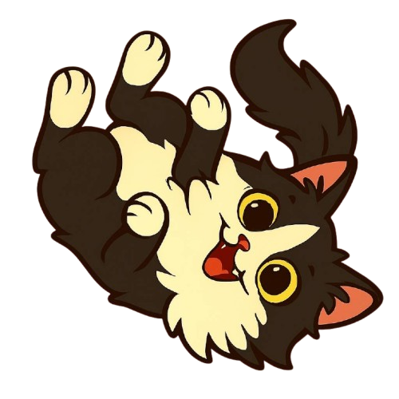

À propos de moi
Mon parcours :
- 2025 — Formation Développeur Front-End : découverte de JavaScript, POO, React, Jest, création du projet "DelinkStudio".
- 2024 — Formation Développeur Intégrateur : utilisation de Visual Studio Code, Git, GitHub, apprentissage du HTML, CSS et SCSS.
- 2024 — Formation SAS Hackeuse : découverte des bases du numérique et du développement web.
- 2024 — Fondation Apprentis d’Auteuil : Formation prépa-apprentissage Pro’pulse. J’ai pu effectuer plusieurs immersions : 1 semaine en magasin (mise en rayon, accueil des clients), trois semaines en boulangerie (préparation de desserts, pizzas, sandwichs et commandes, nettoyage, plaquage) et deux semaines à Dream Donuts (production de donuts, vente et nettoyage).
- 2023 — Formation prépa-alternance numérique a l'AFP2I avec obtention du Pix et du CléA (score Pix : 272). Dans cette formation, j’ai pu découvrir plusieurs métiers : monteur vidéo/photo avec Photoshop et Premiere Pro, réalisation de différents types de supports (affiches, cartes de visite, flyers, logos).
- 2021 — Baccalauréat général.
Mes compétences :
- HTML / CSS / SCSS
- JavaScript En apprentissage
- React En apprentissage
- Git & GitHub
- Visual Studio Code
- Tests unitaires avec Jest En apprentisaage
- Montage photo/vidéo (Photoshop, Premiere Pro)
- Création de supports de communication Avec Canva
Ce que j’aime :
- Découvrir et apprendre de nouvelles technologies
- Travailler en équipe et partager mes idées
- Créer des designs modernes et responsives
- Réaliser des montages photo et vidéo
